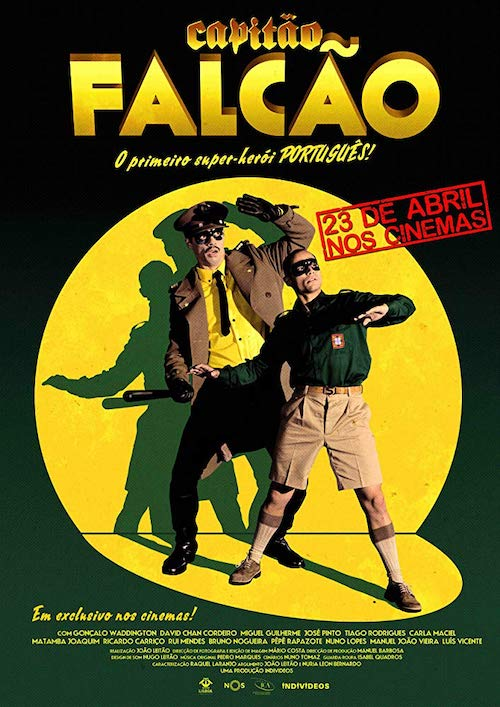
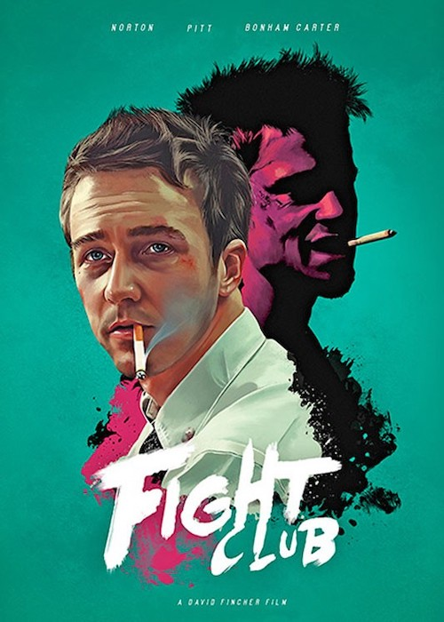
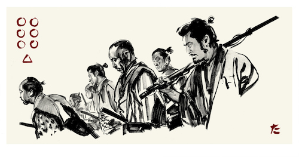

Pedro Nogueira
Developer
The Original Imposter, Geek, Travel Junkie, Pantless Jogger. I have a unique, growing collection of bones. Trying to elevate small talk to medium talk.
- GitHub
- Landing.jobs
Movies
|  | A satire on anti-communist paranoia in the days of fascist dictatorship in Portugal. The series follows the adventures of the "Lusitanian superhero," the ultra-patriotic Captain Falcao, a man who follows the direct orders of Antonio de Oliveira Salazar in the fight against the "red menace". Starring Goncalo Waddington, as Captain Falcao, David Chan Cordeiro (also responsible for coordinating the work of doubles) as his sidekick Puto Perdiz and Jose Pinto in the role of portuguese dictator,Antonio de Oliveira Salazar. Visually, "Captain Falcao" presents itself in the register of the classic "Green Hornet" with "poor quality" image to complete the nostalgic wink. |
|  | A nameless first person narrator (Edward Norton) attends support groups in attempt to subdue his emotional state and relieve his insomniac state. When he meets Marla (Helena Bonham Carter), another fake attendee of support groups, his life seems to become a little more bearable. However when he associates himself with Tyler (Brad Pitt) he is dragged into an underground fight club and soap making scheme. Together the two men spiral out of control and engage in competitive rivalry for love and power. When the narrator is exposed to the hidden agenda of Tyler's fight club, he must accept the awful truth that Tyler may not be who he says he is. |
|  | In 16th century Japan, farmers in a small village face the prospect of again losing their crops to a band of roving thieves. Their solution is to go to the nearest city and see if they can hire samurai to protect them. The farmers are poor and can only offer food and lodging but they soon recruit Kambei Shimada who determines that they will need a total of seven samurai to properly guard the village. Slowly, he recruits other samurai for their task and once complete, move to the village. There they teach the farmers basic self defense and fortify the village itself. When the bandits attack, they are prepared but suffer many losses. |